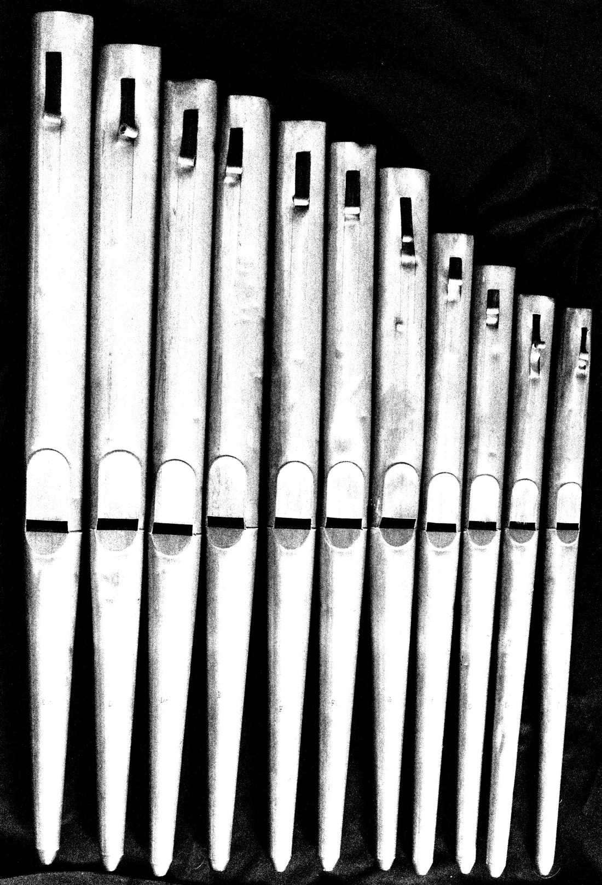

Reiteration
Reiteration is the name under which Christoffer Schöne, a composer living in Berlin, performs. His music grows out of the meantone pipe organ, the just intonation guitar and experimental techniques, and it is shaped as much by performance as by composition.
Recently his focus has turned to multichannel and ambisonic systems: spatial pieces in which live instruments and recorded sound share a dome, and works built from close recordings of the individual pipes of the 1442 Rysum organ, lifted out of their church and placed in a synthetic space. Grief, death and religion return again and again, along with one question: what remains of an instrument once it has left its room?
- Madame Claude, Berlin
These pipes can be played. Touch a pipe to let it sound, touch it again to silence it.
